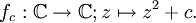
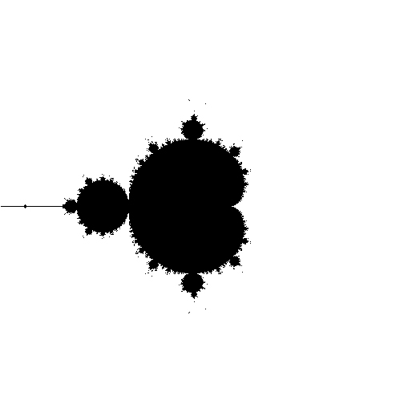
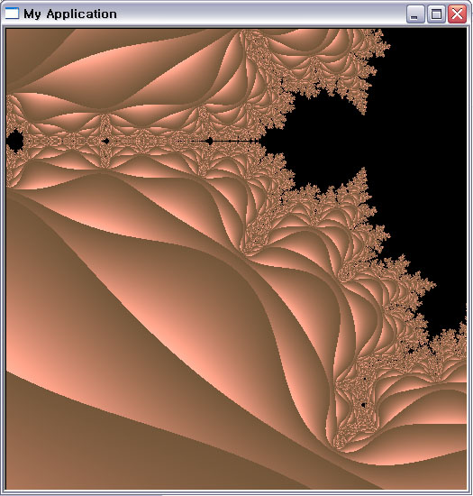
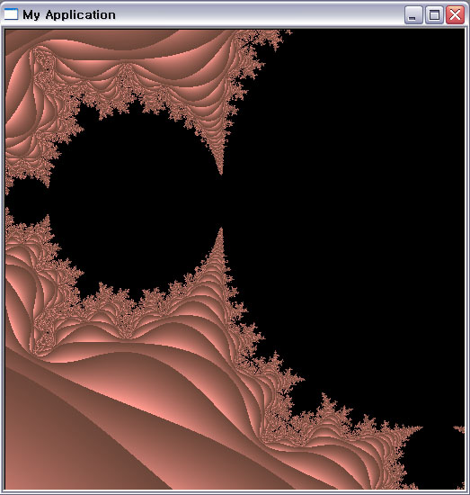
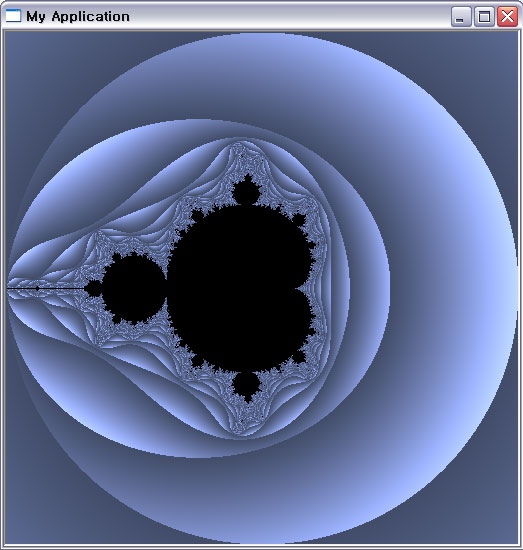
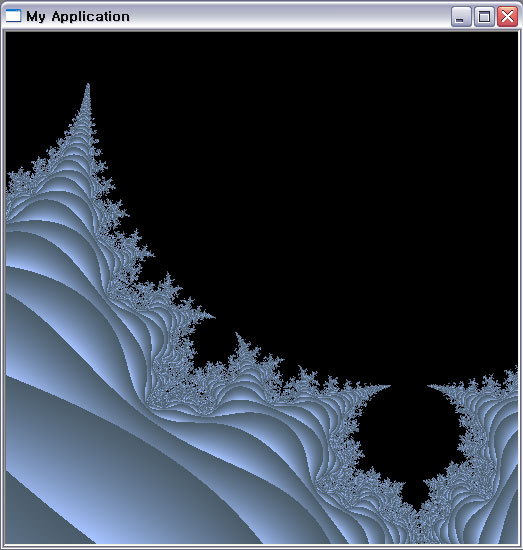

Fractal_Mandelbrot Set


Zoom In and Out, Red Color with a *first code;

More;

And more;
Zoom In and Out, Blue Color with a *second code;

And one more;

Iitial MandelbortSet_Black & White
Iteration: 40, zoomlevel: 2
Iteration: 40, zoomlevel: 3

Iteration: 40, zoomlevel: 3
Iteration: 50, zoomlevel: 0
Iteration: 50, zoomlevel: 3
** Program Execution:: Mouse Right Button : Zoom In, Mouse Left Button : Zoom Out
** When Zoom In&Out Level increases, Color gets slightly changed.
** There are two kinds of Zoom In&Out Algorithm
The most useful reference: http://en.wikipedia.org/wiki/Mandelbrot_set
© 2006 Haru Ji